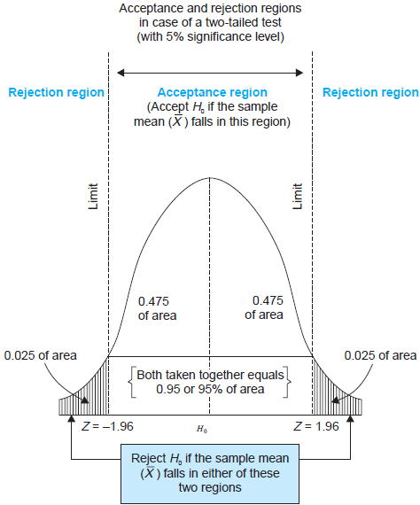
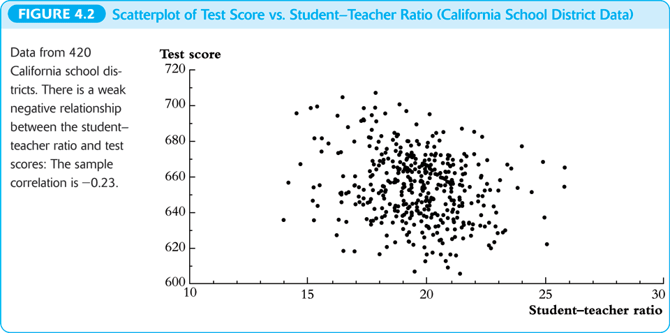
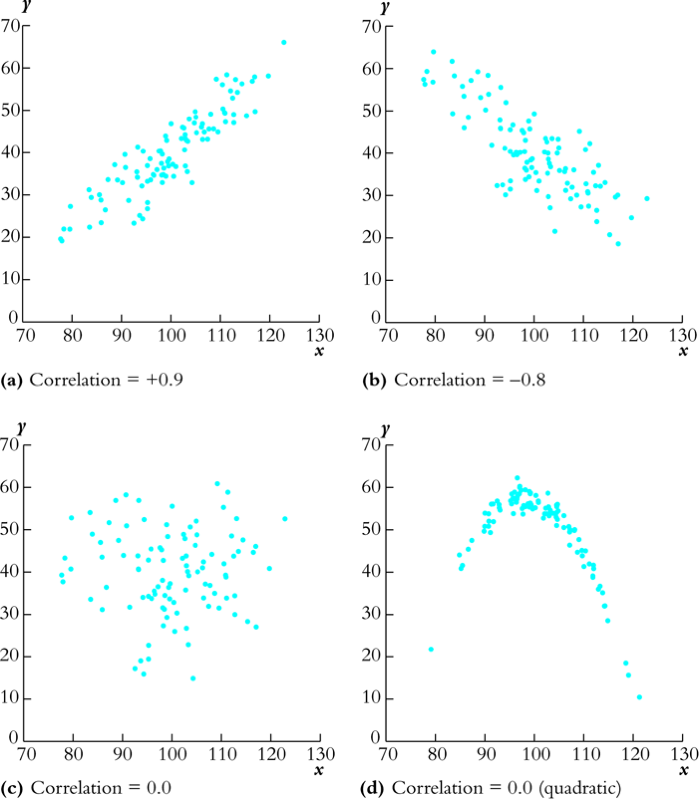

Lecture 3: Review of Statistics
Table of Contents
1 Introduction
Statistics is the science of using data to learn about the world around us. The key insight of statistics is that one can learn about a population distribution by selecting a random sample from that population. Three types of statistical methods are used throughout econometrics: estimation, hypothesis testing, and confidence interval.
2 Estimation of the Population Mean
Suppose we draw \(n\) random samples, \(Y_1, \ldots, Y_n\), that are i.i.d. with the population mean \(\mu_Y\) and the variance \(\sigma^2_Y\), i.e., \(Y_i \sim IID(\mu_Y, \sigma^2_Y)\) for \(i=1, \ldots, n\). The goal is to estimate \(\mu_Y\) given these \(n\) samples. A natural way is to compute the sample average, \(\overline{Y}\). Let see the properties of \(\overline{Y}\) as an estimator of \(\mu_Y\).
2.1 Estimators
An estimator is a function of a sample of data to be drawn randomly from a population. An estimate is the numerical value of the estimator when it is actually computed using data from a specific sample. An estimator is a random variable because of randomness in selecting the sample, while an estimate is a nonrandom realization of the estimator.
Since \(\overline{Y} = (1/n)\sum_{i=1}^n Y_i\), it is an estimator of \(\mu_Y\). However, \(Y_1\), the first observation, can also be used as an estimator because it is indeed a function of sample data. As such, we can have many different estimators of \(\mu_Y\). How can we judge which estimator is better than another?
We use three criteria to assess an estimator: unbiasedness, consistency, and efficiency.
2.2 Unbiasedness
Let \(\hat{\mu}_Y\) be an estimator of \(\mu_Y\). The estimator \(\hat{\mu}_Y\) is said to be unbiased if \(\mathrm{E}(\hat{\mu}_Y) = \mu_Y\), where \(\mathrm{E}(\hat{\mu}_Y)\) is the expectation of the sampling distribution of \(\hat{\mu}_Y\).
- \(\overline{Y}\) is an unbiased estimator of \(\mu_Y\). In Lecture 2, we have already shown that \(\mathrm{E}(\overline{Y}) = \mu_Y\) when \(Y_i \sim IID(\mu_Y, \sigma^2_Y)\) for \(i=1, \ldots, n\).
- \(Y_1\) is also an unbiased estimator because \(\mathrm{E}(Y_1) = \mu_Y\) when \(Y_1\) is drawn from \(IID(\mu_Y, \sigma^2_Y)\).
2.3 Consistency
\(\hat \mu_Y\) is a consistent estimator of \(\mu_Y\) if \(\hat{\mu}_Y\) is convergent in probability to \(\mu_Y\). That is, \(\hat{\mu}_Y\) is consistent if \(\hat{\mu}_Y \xrightarrow{\text{ p }} \mu_Y\) as \(n \rightarrow \infty\).
- \(\overline{Y}\) is a consistent estimator of \(\mu_Y\). The law of large number ensures that \(\overline{Y} \xrightarrow{\text{ p }} \mu_Y\) is true when \(Y_i \sim IID(\mu_Y, \sigma^2_Y)\) for \(i=1, \ldots, n\), and \(\sigma^2_Y < \infty\).
- However, we cannot assess the consistency for \(Y_1\) because it cannot be written as the form of an average.
2.4 Variance and efficiency
When both \(\tilde{\mu}_Y\) and \(\hat{\mu}_Y\) are two unbiased estimators of \(\mu_Y\), we choose the estimator with the tightest sampling distribution, which means the smallest variance. Thus, \(\hat{\mu}_Y\) is said to be more efficient than \(\tilde{\mu}_Y\) if \(\mathrm{Var}(\hat{\mu}_Y) < \mathrm{Var}(\tilde{\mu}_Y)\).
In words, \(\hat{\mu}_Y\) is more efficient than \(\tilde{\mu}_Y\) because \(\hat{\mu}_Y\) uses the information in the data more efficiently than does \(\tilde{\mu}_Y\).
In Lecture 2, we compute the variance of \(\overline{Y}\) to be \(\sigma^2_Y / n\) when \(Y_i \sim IID(\mu_Y, \sigma^2_Y)\). The variance of \(Y_1\) is \(\sigma^2_Y\). When \(n > 1\), \(\overline{Y}\) is more efficient than \(Y_1\).
2.5 \(\overline{Y}\) is the best linear unbiased estimator (BLUE)
In fact, \(\overline{Y}\) happens to be the best linear unbiased estimator (BLUE). It means that among all linear unbiased estimator, \(\overline{Y}\) has the smallest variance.
A linear estimator of \(\mu_Y\) is a weighted average of \(Y_1, \ldots, Y_n\), written as \[ \tilde{\mu}_Y = \frac{1}{n} \sum_{i=1}^n \alpha_i Y_i \] where \(\alpha_1, \ldots, \alpha_n\) are nonrandom constants.
If \(\tilde{\mu}_Y\) is another unbiased estimator of \(\mu_Y\), then we always have \(\mathrm{Var}(\overline{Y}) \leq \mathrm{Var}(\tilde{\mu}_Y)\), and the equality holds only if \(\tilde{\mu}_Y = \overline{Y}\). It means that \(\overline{Y}\) is BLUE.
The proof of \(\mathrm{Var(\overline{Y})} \leq \mathrm{Var}(\tilde{\mu}_Y)\)
That \(\tilde{\mu}_Y\) is an unbiased estimator of \(\mu_Y\) means that \[\mu_Y = \mathrm{E}(\tilde{\mu}_Y) = \mathrm{E}\left( \frac{1}{n} \sum_{i=1}^n \alpha_i Y_i \right) = \frac{1}{n} \mu_Y \sum_{i=1}^n \alpha_i \] which requires \(\frac{1}{n} \sum_{i=1}^n \alpha_i = 1\).
We know the variance of \(\mathrm{Var}(\overline{Y})\) is \(\sigma^2_Y / n\), and the variance of \(\tilde{\mu}_Y\) can be computed as
\begin{equation*} \mathrm{Var}(\tilde{\mu}_Y) = \frac{1}{n^2} \sum_{i=1}^n \alpha_i^2 \mathrm{Var}(Y_i) = \frac{\sigma^2_Y}{n^2} \sum_{i=1}^n \alpha_i^2 \end{equation*}So, to prove \(\mathrm{Var}(\tilde{\mu}_Y) \geq \mathrm{Var}(\overline{Y})\), we only need to show \(\frac{1}{n}\sum_{i=1}^n \alpha_i^2 \geq 1\).
\[ \frac{1}{n}\sum_{i=1}^n \alpha_i^2 = \frac{1}{n} \sum_{i=1}^n (\alpha_i^2 - 2\alpha_i + 1) + \frac{1}{n}\sum_{i=1}^n 2\alpha_i - 1 = \frac{1}{n} \sum_{i=1}^n (\alpha_i - 1)^2 + 1 \geq 1 \]
The second equality holds because \(\frac{1}{n} \sum_{i=1}^n \alpha_i = 1\). And \(\mathrm{Var}(\tilde{\mu}_Y) = \mathrm{Var}(\overline{Y})\) only if \(\alpha_i = 1\) for all \(i=1, \ldots, n\), which is equivalent to \(\tilde{\mu}_Y = \overline{Y}\).
2.6 \(\overline{Y}\) is the least squares estimator of \(\mu_Y\)
Consider the following model \[ Y_i = \alpha + u_i \text{ for } i = 1, 2, \ldots, n \] where \(\alpha\) is a nonrandom intercept to be estimated, \(u_i\) is the error term, which is a random variable with \(\mathrm{E}(u_i) = 0\).
Thus, we have \(E(Y_i) = \alpha = \mu_Y\). That means \(\alpha\) is the mean of \(Y_i\), and an estimator for \(\alpha\) is just an estimator for \(\mu_Y\). \(u_i\) can be seen as the error of predicting \(Y_i\) with \(\alpha\) for each \(i\), and we use \(\sum_{i=1}^n (Y_i - \alpha)^2\) to measure the total prediction errors. A natural choice of an estimator of \(\alpha\) is the one that minimizes this sum of squared errors.
The least squares estimator of \(\mu_Y\) (or \(\alpha\)) is obtained by solving the following problem \[ \operatorname*{min}_a\: \sum_{i=1}^n (Y_i - a)^2 \] The solution of this minimization problem is just \(a = \overline{Y}\).
The proof for \(\overline{Y}\) is the least square estimator
The first order condition for the minimization problem is
\begin{equation*} \frac{d}{da}\sum_{i=1}^n (Y_i - a)^2 = -2\sum_{i=1}^n(Y_i - a) = -2\sum_{i=1}^n Y_i+ 2n a = 0 \end{equation*}Solving the equation for \(a\), we get \(a = 1/n\sum_{i=1}^n Y_i = \overline{Y}\).
3 Hypothesis Tests Concerning the Population Mean
3.1 Null and alternative hypotheses
With the estimate of the population mean, we can test some hypotheses regarding the mean. Hypothesis testing is thus to make a provisional decision based on the evidence at hand on. We first set up a hypothesis to be tested, called the null hypothesis, and a second hypothesis called the alternative hypothesis that holds if the null does not.
In this lecture, we focus on the hypothesis of the population mean, \(\mathrm{E}(Y)\), taking on a specific value, \(\mu_{Y,0}\). So the null hypothesis, denoted as \(H_0\), is \[ H_0: E(Y) = \mu_{Y,0} \]
The alternative hypothesis, denoted as \(H_1\), can be either two-sided, i.e., \(H_1: E(Y) \neq \mu_{Y,0}\), or one-sided, i.e., \(H_1: E(Y) > \mu_{Y,0}\), depending on the question of interest.
One thing should be kept in mind is that we usually do not say "accept the null hypothesis" when the hypothesis test is in favor of the null, but say "fail to reject the null". That means, that given the sample data at hand, we do not have sufficient evidence to prove the null hypothesis is false, but it is likely that the null would be rejected given another set of samples.
3.2 Test statistics
Upon setting up the hypotheses to be tested, we need test statistics to be used in the test. In the case of testing the population mean, \(\mathrm{E}(Y)\), we find two test statistics in two different situations: the z-statistic when \(\sigma_Y\) is known and the t-statistic when \(\sigma_Y\) is unknown
The z-statistic when \(\sigma_Y\) is known
We know that when \(Y_i \sim IID(\mu_Y, \sigma^2_Y)\) for \(i=1, \ldots, n\), \(E(\overline{Y}) = \mu_Y\) and \(\mathrm{Var}(\overline{Y}) = \sigma^2_{\overline{Y}} = \sigma^2_Y / n\). In the null hypothesis, we specify \(\mu_Y = \mu_{Y,0}\). So given that \(\sigma_Y\) is known, the z-statistic is computed as \[ z = \frac{\overline{Y} - \mu_{Y,0}}{\sigma_{\overline{Y}}} = \frac{\overline{Y} - \mu_{Y,0}}{\sigma_Y/\sqrt{n}} \] As \(n \rightarrow \infty\), by the central limit theorem, we know \(z \xrightarrow{\text{ d }} N(0, 1)\).
The t-statistic when \(\sigma_Y\) is unknown
Of course, \(\sigma_Y\) is the standard deviation of the population variance that is usually unknown. So we need to replace \(\sigma_Y\) with its estimator.
- The sample variance and standard deviation
The sample variance \(s^2_Y\) is is an estimator of the population variance \(\sigma^2_Y\), which is computed as \[ s^2_Y = \frac{1}{n-1}\sum^n_{i=1} (Y_i - \overline{Y})^2 \] The sample standard deviation, \(s_Y\), is the square root of \(s^2_Y\).
We can prove that the sample variance, \(s^2_Y\), is a consistent estimator of the population variance, that is, as \(n \rightarrow \infty\), \(s^2_Y \xrightarrow{\text{ p }} \sigma^2_Y\). (See the proof in Appendix 3.3.)
- The standard error of \(\overline{Y}\)
The standard error of \(\overline{Y}\), denoted as \(SE(\overline{Y})\) or \(\hat{\sigma}_{\overline{Y}}\), is an estimator of the standard deviation of \(\overline{Y}\), \(\sigma_{\overline{Y}}=\sigma_Y/\sqrt{n}\), with \(s_Y\) replacing \(\sigma_Y\). \[ SE(\overline{Y}) = \hat{\sigma}_{\overline{Y}} = \frac{s_Y}{\sqrt{n}} \]
- The t-statistic
When \(\sigma_Y\) is unknown, by replacing \(\sigma_Y\) with \(s_Y\), we have the t statistic \[ t = \frac{\overline{Y} - \mu_{Y,0}}{SE(\overline{Y})} = \frac{\overline{Y} - \mu_{Y,0}}{s_Y/\sqrt{n}} \]
- The asymptotic distribution of the t statistic is \(N(0, 1)\) because \(s_Y\) is a consistent estimator of \(\sigma_Y\).
- When \(Y_i\) for \(i=1, \ldots, n\) are i.i.d. from \(N(\mu_Y, \sigma_Y^{2})\), we can show that the exact distribution for the Student t statistic is the Student t distribution with \((n-1)\) degrees of freedom. That is \[ t \sim t(n-1) \] (See Section 3.6, Page 129, in the textbook for a discussion about the reason for t has a t distribution with \(n-1\) degree of freedom.)
3.3 Hypothesis testing with a pre-specified significance level
With the null and alternative hypotheses being the goal of the test and test statistics being the tools, we need a rule to make a judgment: When can we reject (or fail to reject) the null hypothesis if the test statistic takes on what values? To do so, we need to first define some concepts.
Type I and type II errors
A statistical hypothesis test can make two types of mistakes:
- Type I error. The null hypothesis is rejected when in fact it is true.
- Type II error. The null hypothesis is not rejected when in fact it is false.
The probability of making a type I error is easier to be identified and controlled than that of a type II error. So the commonly practiced rule of judging a hypothesis test concerns avoiding the type I error.
The significance level and the critical value
- The significance level is the pre-specified probability of type I error. Usually, we set the significance level to be \(\alpha = 0.05, 0.10, \text{ or } 0.01\).
- The critical value, denoted as \(c_{\alpha}\), is the value of the test statistic for which the test rejects the null hypothesis at the given significance level. The \(N(0, 1)\) critical value for a two-sided test with a 5% significance level is 1.96.
- The rejection rule. For a two-sided test, we reject the null hypothesis when \(|z^{act}| > c_{\alpha}\).
The rejection rule is easier to be understood with the rejection and acceptance region, as shown in Figure 1. The rejection region is the set of values of the test statistic for which the test rejects the null, and the acceptance region is the vice.

Figure 1: An illustration of a two-sided test
The power and the size of the test
- The size of the test is the probability that the test actually incorrectly rejects the null hypothesis when it is true. That is, the size of the test is just the significance level.
- The power of the test is the probability that the test correctly rejects the null when the alternative is true. That is, \(\text{power} = 1 - \mathrm{Pr}(\text{type II error})\)
3.4 The p-value
The p-value, also called the significance probability, is the probability of drawing a statistic at least as adverse to the null hypothesis as the one you actually computed in your sample, assuming the null hypothesis is correct.
The p-value provides more information than the significance level. In fact, the p-value is also named the marginal significance level, which the smallest significance level at which you can reject the null hypothesis. The rejection rule of rejecting the null is then the \(\text{p-value} < \alpha\).
Mathematically, the p-value is computed as
\begin{equation*} p\text{-value} = \begin{cases} \mathrm{Pr}_{H_0}\left(|z| > |z^{act}|\right)=2\Phi(-|z^{act}|) \text{ when } \sigma_Y \text{ is known} \\ \mathrm{Pr}_{H_0}\left(|t| > |t^{act}|\right)=2\Phi(-|t^{act}|) \text{ when } \sigma_Y \text{ is unknown} \end{cases} \end{equation*}3.5 One-sided alternatives
For a one-sided alternative hypothesis, \(H_1: \mathrm{E}(Y) > \mu_{Y,0}\), we can compute the p-value as \[ p\text{-value} = \mathrm{Pr}_{H_0}(t > t^{act}) = 1 - \Phi(t^{act}) \]
The \(N(0, 1)\) critical value for a one-sided test with a 5% significance level is 1.64. The rejection region for this test is all values of the t-statistic exceeding 1.64.
4 Confidence Intervals for the Population Mean
4.1 Definitions
- A confidence set is the set of values that contains the true population mean \(\mu_Y\) with a certain prespecified probability.
- A confidence level is the prespecified probability that \(\mu_Y\) is contained in the confidence set. \(\text{confidence level} = 1 - \text{significance level}\).
- A confidence interval is the confidence set when it is an interval.
- In the case of a two-sided test for \(\mu_Y\), we say that a 95% confidence interval is an interval constructed so that it contains the true value of \(\mu_Y\) in 95% of all possible random samples.
4.2 Constructing a confidence interval based on the t statistic
- Step 1: we compute the t statistic for the two-sided test \[ t = \frac{\overline{Y} - \mu_{Y,0}}{SE(\overline{Y})} \xrightarrow{\text{ d }} N(0, 1) \]
- Step 2: we know that we fail to reject the null at the 5% level if \(|t| < 1.96\).
Step 3: we plug in the definition of \(t\) and solving for \(|t| \leq 1.96\), we get
\begin{align*} -1.96 & \leq \frac{\overline{Y} - \mu_{Y,0}}{SE(\overline{Y})} \leq 1.96 \\ \overline{Y} - 1.96 SE(\overline{Y}) & \leq \mu_{Y,0} \leq \overline{Y} + 1.96 SE(\overline{Y}) \end{align*}Thus, the 95% confidence interval two-sided confidence interval for \(\mu_Y\) is \[ \{ \overline{Y} \pm 1.96 SE(\overline{Y}) \} \]
Similarly, we can get
- 90% confidence interval for \(\mu_Y = \{ \overline{Y} \pm 1.64 SE(\overline{Y}) \}\)
- 99% confidence interval for \(\mu_Y = \{ \overline{Y} \pm 2.58 SE(\overline{Y}) \}\)
5 Comparing Means from Different Populations
5.1 Hypothesis tests for the difference between two means
Now we extend hypothesis testing involving one population mean to that regarding comparison between two population means. Say, the difference in earnings between male college graduates and female college graduates. The basic ideas and procedure in this test is the same as for testing the single population mean.
Let \(Y_{m, i}\) for \(i=1, \ldots, n_m\) be \(n_m\) i.i.d. samples from the population of earnings of male college graduate, i.e., \[ Y_{m,i} \sim IID(\mu_m, \sigma^2_m) \text{ for } i=1,\ldots,n_m \] and \(Y_{w, j}\) for \(j=1, \ldots, n_w\) be \(n_w\) i.i.d. samples from the population of earnings of female college graduate, i.e., \[ Y_{w,j} \sim IID(\mu_w, \sigma^2_w) \text{ for } j=1,\ldots,n_w \] Also, we assume that \(Y_{m,i}\) and \(Y_{w,j}\) are independent.
The hypothesis to be tested is whether the mean earnings for the male and female graduates differ by a certain amount, that is, \[ H_0: \mu_m - \mu_w = d_0,\; \text{ vs. }\: H_1: \mu_m - \mu_w \neq d_0 \]
As in the test for the single population mean, we can take the following steps to test the difference in two population means:
Calculate the sample average earnings: \(\overline{Y}_m\) for the male and \(\overline{Y}_w\) for the female. \(\overline{Y}_m\) and \(\overline{Y}_w\) are the unbiased estimators for \(\mu_m\) and \(\mu_w\), respectively.
As \(n_m\) and \(n_w\) get large, we know \(\overline{Y}_m \xrightarrow{\text{ d }} N(\mu_Y, \sigma^2_m/n_m)\), and \(\overline{Y}_w \xrightarrow{d} N(\mu_w, \sigma^2_w / n_w)\).
Given that \(\overline{Y}_m - \overline{Y}_w\) is a linear function of \(\overline{Y}_m\) and \(\overline{Y}_w\), and \(Y_{m,i}\) and \(Y_{w,j}\) are independent, we know that \[(\overline{Y}_m - \overline{Y}_w) \xrightarrow{d} N(\mu_m - \mu_w,\; \frac{\sigma^2_m}{n_m} + \frac{\sigma^2_w}{n_w}) \]
When \(\sigma^2_m\) and \(\sigma^2_w\) are known, we use the z statistic \[ z = \frac{(\overline{Y}_m - \overline{Y}_w) - d_0}{\left( \frac{\sigma^2_m}{n_m} + \frac{\sigma^2_w}{n_w} \right)^{1/2}} \xrightarrow{\text{ d }} N(0, 1) \]
When \(\sigma^2_m\) and \(\sigma^2_w\) are unknown, we the t statistic \[ t = \frac{(\overline{Y}_m - \overline{Y}_w) - d_0}{SE(\overline{Y}_m - \overline{Y}_w)} \xrightarrow{\text{ d }} N(0, 1) \] where
\begin{gather*} SE(\overline{Y}_m - \overline{Y}_w) = \left(\frac{s^2_m}{n_m} + \frac{s^2_w}{n_w} \right)^{1/2} \\ s^2_m = \frac{1}{n_m-1}\sum^{n_m}_{i=1}(Y_{m,i} - \overline{Y}_m)^2 \\ s^2_w = \frac{1}{n_w-1}\sum^{n_w}_{i=1}(Y_{w,i} - \overline{Y}_w)^2 \end{gather*}Calculate the p value: The p value for the two-sided test is calculated as \[ p\text{-value} = 2\Phi(-|t|) \]
For a two-sided test at the 5% significant level, we can reject the null hypothesis when the p value is less than 5%, or, equivalently, when \(|t| > 1.96\).
5.2 Confidence intervals for the difference between two means
The 95% confidence interval can be constructed as usual based on the t statistic we have computed above. That is, the 95% confidence interval for \(d = \mu_m - \mu_w\) is \[ (\overline{Y}_m - \overline{Y}_w) \pm 1.96SE(\overline{Y}_m - \overline{Y}_w) \]
5.3 Differences-of-Means Estimation of Causal Effects Using Experimental Data
The difference-of-means estimation and hypothesis test can be used in estimation of causal effect in ideal randomized controlled experiments (RCE).
We define the outcome of a RCE to be \(Y\) and the binary treatment variable to be \(X\), \(X=1\) for the treatment group and \(X=0\) for the control group. Then the causal effect of the treatment can be conveniently expressed as the difference in the conditional expectation, \[ E(Y \mid X=1) - E(Y \mid X=0) \]
We can consider the treatment group and the control group to represent two independent population. Then, we can use the estimation and hypothesis test regarding the difference between two population means to examine the causal effect.
6 Scatterplots, the Sample Covariance, and the Sample Correlation
6.1 Scatterplots
Before a formal statistical study, we often first do some exploratory analysis. Drawing graphs is an important aspect of exploratory data analysis to visualize the patterns of the variables of interests.
A scatterplot is a plot of \(n\) observations on \(X_i\) and \(Y_i\), in which each observation is represented by the point \((X_i, Y_i)\). Figure 2 is the scatterplot between test scores and the student-teacher ratios in the example of California school districts.

Figure 2: The scatterplot between test scores and student-teacher ratios
6.2 Sample covariance and correlation
The population covariance and correlation measure the relation between two random variables \(X\) and \(Y\) in their population joint probability distribution. Since they are typically unknown, we use the sample covariance and the sample correlation coefficient as their estimators.
Sample covariance
The sample covariance, denoted as \(s_{XY}\), is \[ s_{XY} = \frac{1}{n-1}\sum^n_{i=1}(X_i - \overline{X})(Y_i - \overline{Y}) \]
Sample correlation
The sample correlation coefficient, denoted as \(r_{XY}\), is \[ r_{XY} = \frac{s_{XY}}{s_X s_Y} \] and we have \(|r_{XY}| \leq 1\).
Consistency of the sample covariance and correlation
If \((X_i,\, Y_i)\) are i.i.d. and \(X_i\) and \(Y_i\) have finite fourth moments, then \[ s_{XY} \xrightarrow{\text{ p }} \sigma_{XY} \text{ and } r_{XY} \xrightarrow{\text{ p } } \rho_{XY} \]
The correlation coefficient measures the linear association
We should emphasize that the correlation coefficient is a measure of linear association between \(X\) and \(Y\). There could be a relationship with zero correlation coefficient, but is in fact nonlinear, as shown in Figure 3.

Figure 3: Scatterplots for four hypothetical data sets